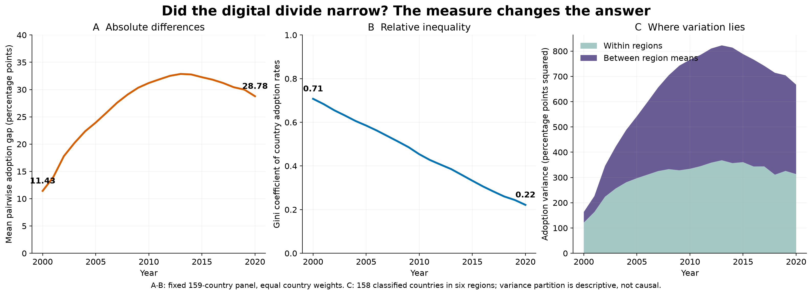
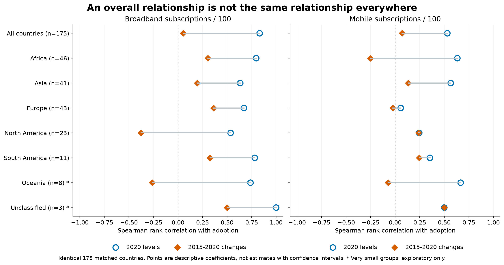
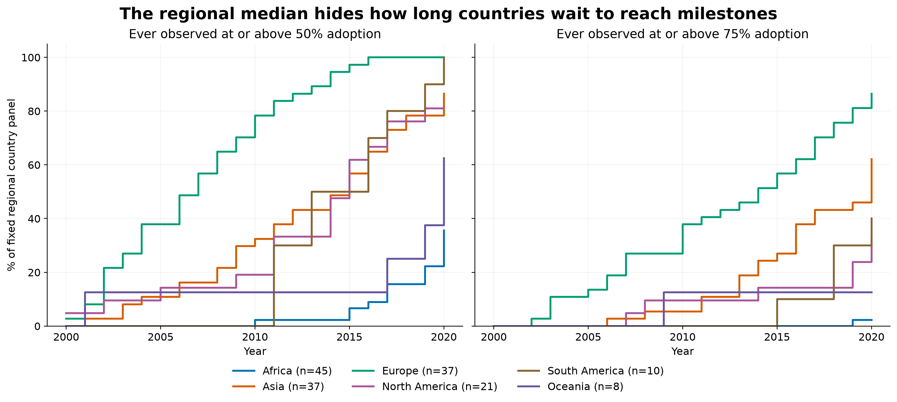

Three new internet-specific trials. Start with the absolute/relative inequality comparison. Current 25-page PDF unchanged.
Also see the regional gain raincloud

Question: Can progress reduce relative inequality while absolute gaps remain wide?
New evidence: Mean pairwise adoption gaps rise from 11.43 to 28.78 points, peaking at 32.86 in 2013. Yet the Gini falls from 0.708 to 0.222. In the 158-country classified panel, between-region means account for 53.0% of 2020 variance; the remaining 47.0% is within regions.
How to read: Panel A averages absolute differences over all ordered country pairs (including self-pairs). Panel B divides that quantity by twice mean adoption. Panel C partitions population variance into country-count-weighted within-region variation and variation of region means.
Limits: This applies inequality measures to national adoption percentages, not income and not individual internet access. Each country has equal weight. High adoption is bounded at 100%; the baseline mean is small. Different measures legitimately answer different questions. Region labels do not establish causes. One unclassified country is excluded only from panel C.
Report decision: Highest-priority internet enhancement: combine this with Figure 10 or use two panels beside its quantile comparison. It prevents a one-sided conclusion that all forms of inequality increased.

Question: Does a pooled infrastructure relationship also describe regions and changes?
New evidence: Pooled broadband/adoption correlation is 0.831 for 2020 levels but 0.054 for changes. Europe's mobile/adoption level correlation is 0.056; the regional rows show which associations survive disaggregation and which do not.
How to read: Blue circles correlate 2020 country levels; orange diamonds correlate each country's five-year changes. Gray segments connect two different descriptive summaries for the same cohort, not a time trajectory or uncertainty interval.
Limits: Correlations do not identify infrastructure effects, direction of causation or omitted variables. Restricted regional ranges and small group sizes affect coefficients. A different magnitude is not automatically Simpson's paradox. No significance testing or uncertainty claim is made; raw scatterplots remain necessary for shape/outliers.
Report decision: Strong companion to Figures 6-7: use a compact version to make the existing level-versus-change conclusion regional. Do not replace the SPLOM entirely, because a correlation summary hides shape.

Question: Who reached majority and high adoption early, late, or not within the observed period?
New evidence: By 2020, the share ever observed at 75% adoption is Africa: 2.2%, Asia: 62.2%, Europe: 86.5%, North America: 33.3%, South America: 40.0%, Oceania: 12.5%.
How to read: Each step is the cumulative share of a fixed regional panel ever observed at or above the threshold. A country counts after its first qualifying annual value, even if adoption later declines. Two thresholds test dependence on the chosen milestone.
Limits: 158 classified countries, one unclassified country excluded. These are empirical cumulative attainment curves, not Kaplan-Meier estimates or modelled hazards. Annual sampling misses within-year crossing times. Countries qualifying in 2000 may have crossed earlier; those not qualifying by 2020 may cross later. Reaching a milestone does not guarantee sustained access or population-wide equality.
Report decision: Useful temporal companion, but lower priority than the inequality and association views: horizons already show trajectories. Prefer this to another snapshot when milestone timing is the chosen question.